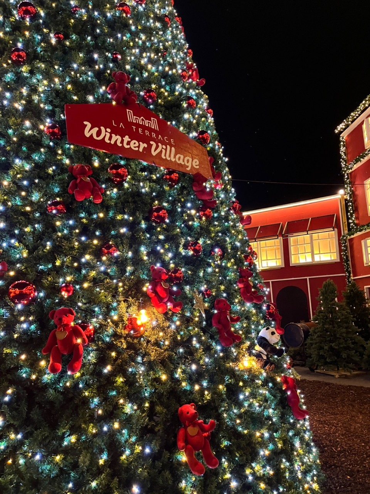
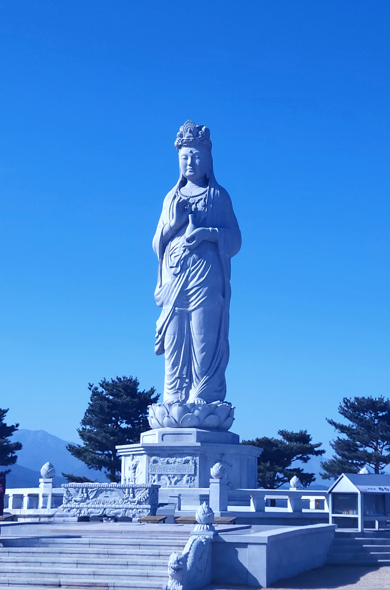
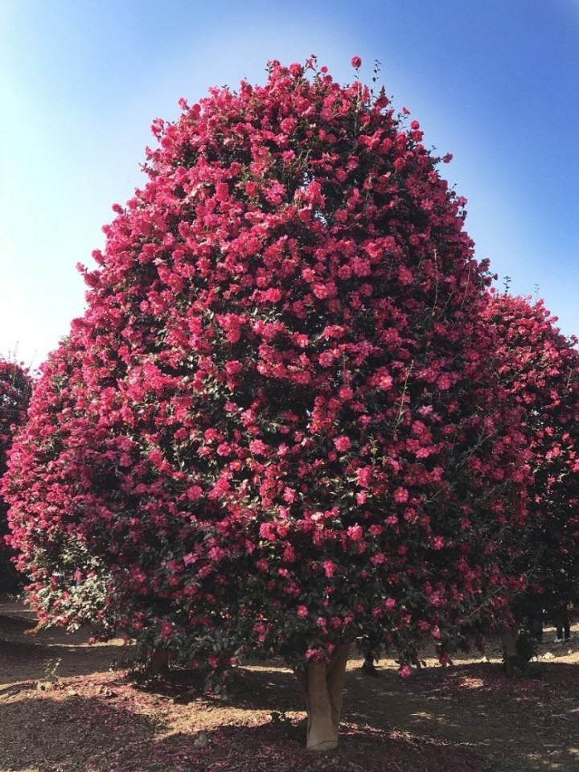

PLAY
여수 라테라스 윈터빌리지
다가오는 크리스마스 시즌을 맞아, 다양한 어트렉션과
크리스마스 마을처럼 꾸며놓은 조경과 마켓들을
볼 수 있는 곳입니다.
양양 낙산사
양양 낙산사에는 아주 큰 3대 해수관음상이 있습니다.
불교가 아니더라도 풍경을 보러 가기에 아주 좋은 곳이라
한 번 쯤은 가보는 것을 추천합니다.
제주 동백 수목원

겨울하면 피는 꽃, 동백꽃입니다.
겨울에 이곳에 방문하면 하얀 눈 사이로 붉게 핀
동백을 뒤로 예쁜 사진을 찍을 수 있습니다.